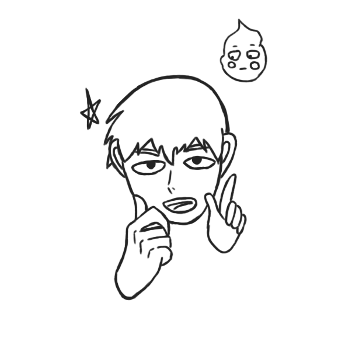

¿cansado de que te asustan los fantasmas? ¿Quieres poder sentirte tranquilo en tu casa de nuevo? pues no busques más, aquí en ghostygang nos encargamos de esos problemas por ti, solo estamos a un susto de distancia, disponibles todo el año, las 24 horas del día.
Si algún miembro de tu familia o tú ya fue herido por uno de estos espectros,¡contarás con un 20 % de descuento!
Los servicios que ofrecemos son:
- - remover fantasmas de tu vivienda u otros artículos
- - ayudar a fantasmas a pasar a otro lado
- - capturar fantasmas
- - limpieza de desastres ocasionados por fantasmas
Si no sabes qué tipo de fantasmas tienes, acá te dejamos información de cuáles existen y cual es tu posible problema en casa.
- fantasma asustadizo, solo mueve cositas de su sitios, no es agresivo, no presenta ninguna posibilidad de agredir
- fantasma juguetón, que tira cosas y habla, fantasma que no es agresivo, pero puede llegar a tocarte o molestarte
- fantasma mala leche, fantas que tira cosas, mueve cosas y se aparece, es peligroso, si tienes este tipo de fantasma llámanos lo antes posibles, si ya agredió a alguien de tu familia, te damos el 20 por ciento de descuento
si cumples más de 3 cosas de la siguiente encuesta, es porque tienes algún fantasma en casa molestando, no dudes en llamarnos para ayudarte.
nos contactaremos contigo cuando leamos tu encuesta, muchas gracias por confiar en Ghostygang
